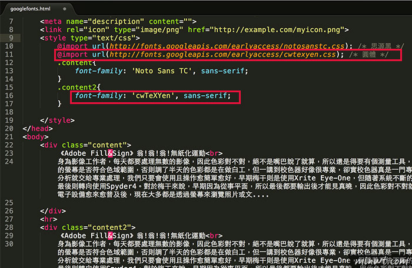

| Introduction |
| colors |
| 內嵌 google font(web) GOOGLE雲端網路字型 使用方法(web) 內嵌標楷體(ref) <head> <link rel="stylesheet" type="text/css" href="https://fonts.googleapis.com/earlyaccess/cwtexkai.css"> <style> .kai{ font-family: "cwTeXKai", "標楷體",sans-serif; } </head> 匯入套用 外部的 CSS 樣式也可以被匯入進 HTML 文件。匯入的做法為利用 @import 這個指令。@import 的語法為： <style type="text/css">@import url(https://fonts.googleapis.com/earlyaccess/cwtexkai.css);</style> @import 指令最初的用意，是為了能夠針對不同的瀏覽器而運用不同的樣式。 不過，現在已經沒有這個必要。現在用 @import 的目的，最常是要加入多個 CSS 樣式。 當多個 CSS 樣式被 @import 的方式加入，而不同 CSS 樣式互相有衝突時，後被加入的 CSS 樣式有優先的順位 <head> <style type="text/css"> @import url(https://fonts.googleapis.com/earlyaccess/cwtexkai.css); .kai{ font-family: "cwTeXKai", sans-serif; } </style> </head>  注意：用 @import 引入網路字型時，必須擺在css文件程式碼開始的第一行，不然字型會無效。 |
| icon---- Material.io(web) klarsys.github.io(web) Font Awesome(web) weather icons(web) |
| Math |